W2: Quantum Biology and the Brain
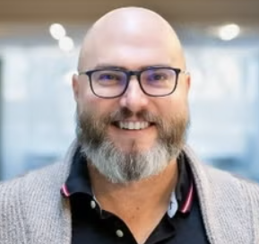
Travis Craddock (Chair)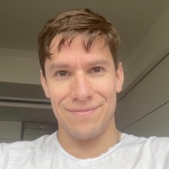
Joseph Jacks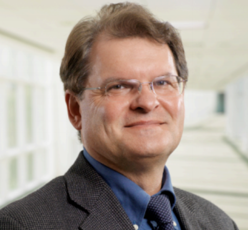
Jack Tuszynski Nirosha Murugan
Nirosha Murugan Lea Gassab
Lea Gassab Mark Bailey
Mark BaileyLed by Travis Craddock (Tier 1 Canada Research Chair in Quantum Neurobiology, University of Waterloo), this workshop explores emerging evidence and theoretical frameworks at the intersection of quantum physics, biology, and consciousness research. Together, the talks examine how quantum-scale processes may contribute to biological organization, neural information processing, and new scientific approaches to understanding mind and brain.
Part 1 (8:30 – 10:40 am) — presenters:
Joseph Jacks — The current state of quantum biology research. Founder and General Partner of OSS Capital, San Francisco, California, USA.
Jack Tuszynski — Quantum metabolism and the biological Planck constant. Professor of Biomedical Engineering at the Polytechnic University of Turin, Italy; Professor Emeritus at the University of Alberta, Edmonton, Canada; and Senior Scientific Advisor at NexiVerify, Vancouver, Canada.
Nirosha Murugan — Photo-encephalography. Tier 2 Canada Research Chair in Biophysics and Assistant Professor, Department of Health Sciences, Wilfrid Laurier University, Waterloo, Ontario, Canada.
Part 2 (11:10 am – 12:30 pm) — presenters:
Lea Gassab — Microtubules as quantum-optical systems in biology. Provost’s Interdisciplinary Postdoctoral Scholar in the Departments of Biology, Physics & Astronomy, and Chemistry, and the Waterloo Institute for Nanotechnology, University of Waterloo, Waterloo, Ontario, Canada.
Mark Bailey — Superpsychism. Founder of DataField Intelligence LLC; Associate Director of the Center for the Future of AI, Mind, and Society; and Research Affiliate Professor, Department of Electrical Engineering and Computer Science, Florida Atlantic University, Boca Raton, Florida, USA.
W3: Brain Electromagnetic Field Generation, Computation and Information Processing
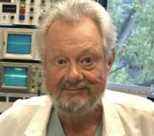
Bruce MacIver (Chair) Jonathan Schooler
Jonathan Schooler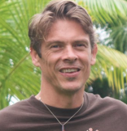
Tam HuntElectromagnetic field (EMF) theories of consciousness have been proposed to explain brain function for over seventy years. Interest in the theory continues because it explains mind–brain integration and offers a simple solution to the “binding problem” of our unified conscious experience — thereby addressing the “hard problem” of consciousness. EM fields are easily measured, and many correlates of field activity have been noted, associated with loss and recovery of consciousness, sensory perception, and behavior. This workshop brings together leading proponents of the EMF theory of consciousness to discuss how the brain generates EM fields, how these fields control neuronal activity via ephaptic interactions throughout the brain, and how field matrix computing can bring about information integration. Ample time is reserved for audience participation and speaker interactions — including discussion of theoretical and empirical support for the EMF’s role in consciousness, the self, the mind, mind–brain duality, and parapsychological possibilities such as telepathy and cosmic consciousness.
Presenters:
Jonathan W. Schooler, PhD — Background and history of EMF theories of consciousness. Schooler is a Distinguished Professor of Psychological and Brain Sciences at the University of California Santa Barbara, Director of UCSB’s Center for Mindfulness and Human Potential, and Director of the Sage Center for the Study of the Mind. His research intersects philosophy and psychology, including the relationship between mindfulness and mind-wandering and theories of consciousness. A former holder of a Tier 1 Canada Research Chair, his research has been featured on Closer to Truth, BBC Horizon, and Through the Wormhole with Morgan Freeman. With over 270 scholarly publications and over 50,000 citations, he is a six-time recipient of the Clarivate Web of Science Highly Cited Researcher Award and is ranked among the top 100 cognitive psychologists by ScholarGPS and AcademicInfluence.
M. Bruce MacIver, MSc, PhD — Experimental evidence showing how EMFs are generated by neurons and how the fields influence neuronal discharge. MacIver is a Professor Emeritus of neurophysiology at Stanford University, where he directs the Neuropharmacology Lab. He holds the 2004 Cox Medal from Stanford University and the 2017 Elemer Zsigmond Award from the International Society for Anaesthetic Pharmacology. He is interested in ways to measure consciousness as well as theories of consciousness, especially the electromagnetic field theory that our mind — and hence consciousness — resides in the ever-changing cloud of energy generated by our brains, which in turn influences our neural circuitry through ephaptic feedback. MacIver is a leading researcher developing new ways to visualize this energy cloud using non-linear dynamic analyses of EEG/MEG recordings.
Tam Hunt — Neuronal synchronization and rhythms that amplify and integrate EMF activity. Hunt is a scholar at UC Santa Barbara’s METALAB, where he studies consciousness and the philosophy of mind. He has been lead guest editor for two Frontiers in Human Neuroscience research topics, including “EM field theories of consciousness: Opportunities and obstacles” and “Mapping the resonome.” He is lead developer, with Jonathan Schooler, of the General Resonance Theory of consciousness, a public policy lawyer specializing in green energy and AI safety, and host of the Diamond Mind podcast. His website is tam-hunt.com.
W1: Psi and the Evolution of Consciousness Science
 Thomas Brophy (Chair)
Thomas Brophy (Chair)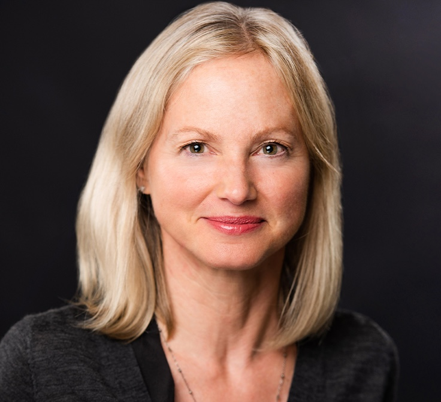
Claudia Welss Dean Radin
Dean Radin Beatriz Villarroel
Beatriz Villarroel Helané Wahbeh
Helané Wahbeh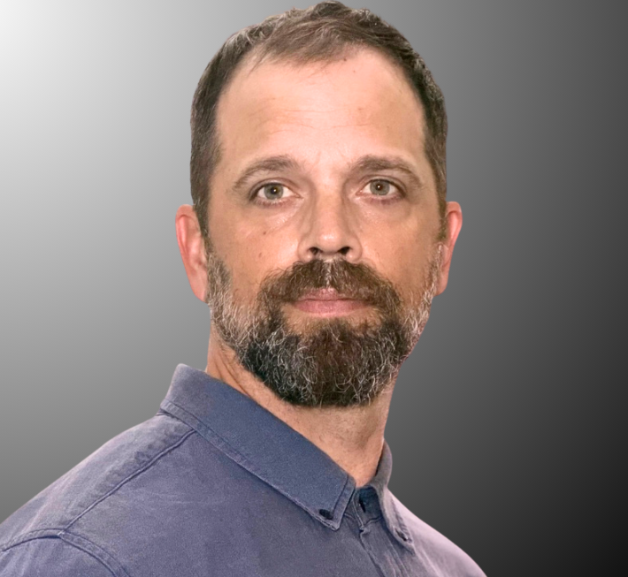
Erik Brinsmead Arnaud Delorme (Discussant)
Arnaud Delorme (Discussant)This workshop explores the position that incorporating psi phenomena and psi research into a new scientific framework that can sustain their existence will be the centerpiece of a revolution in scientific method and framework needed to incorporate a science of consciousness, and emerging phenomenology including UAP, into a whole-of-reality ontology. The workshop runs in two parts: Part 1 in the late morning and Part 2 in the afternoon.
Part 1 (11:10 am – 12:30 pm) — presentations of 25 minutes each:
Claudia Welss, IONS Board Chair — From the Overview Effect that inspired IONS’ founding to the Global Consciousness Project and Global Mind Change, this talk traces the evolution of consciousness research toward a more interconnected view of mind and reality. It explores how these ideas have shaped IONS’ mission and their implications for the future of consciousness science.
Dean Radin, IONS Chief Scientist — Nonlocal Minds: Information Without Boundaries. From StarGate’s remote viewers to random number generators whose outputs correlate with mental intention, psi research suggests that these phenomena are all linked to ways that information “flows” through space and time. This talk traces an arc from classified remote viewing programs, to mind–matter interaction studies with truly random systems, and to a new generation of experiments probing the quantum observer effect. Taken individually, these are curiosities. Taken together, they suggest something more provocative: consciousness may entail a mode of nonlocal information access that transcends the skull and is unbound by the everyday constraints of space, time, or causality.
Beatriz Villarroel — By mining overlooked astronomical observations and discarded datasets, this talk explores how anomalies can reveal clues to new physics and a broader scientific paradigm. It examines possible connections between astrophysical observations, UAP, and psi, and considers how these phenomena may challenge current assumptions about reality.
Part 2 (2:00 pm – 4:10 pm) — presentations of 25 minutes each:
Helané Wahbeh, IONS Director of Research — This talk presents a research program that brings trance-channeled communications attributed to extraterrestrial intelligences into disciplined empirical study, combining structured interviews, transformer-based semantic analysis, and reflexive thematic analysis, without adjudicating the ontological status of the purported sources. The findings demonstrate measurable internal organization and convergent themes across independent channelers, offering a replicable template for studying contested consciousness- and UAP-adjacent phenomena as organized meaning-making discourse.
Erik Brinsmead, IONS AI Lead — This talk presents an AI-driven analysis of channeled communications, demonstrating how modern machine learning methods can uncover patterns and structure in the noetic archive. It also explores the broader potential of AI to accelerate research in consciousness and anomalistic phenomena.
Sitara Tadeo, IONS Science Team — This talk presents new research on the psychological changes associated with out-of-body experiences, offering a first public look at IONS’ ongoing OBE research program. It examines how these experiences may transform perception, well-being, and our understanding of consciousness.
Thomas Brophy, IONS President — This talk introduces IONS Y and explores the development of scientific and philosophical frameworks that explicitly incorporate consciousness and psi into a broader ontology of reality. It considers how such frameworks may help unify findings from consciousness research, anomalous phenomena, and emerging scientific paradigms.
Q&A and dialogue — 30 minutes, joined by Arnaud Delorme.
W4: Research at the Edge of Consciousness: OBEs, Past Life Memories and Altered States of Consciousness
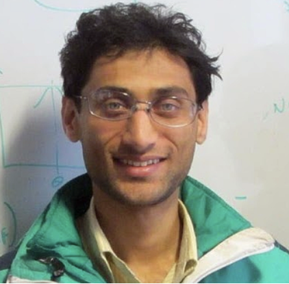
Kunal Mooley (Chair)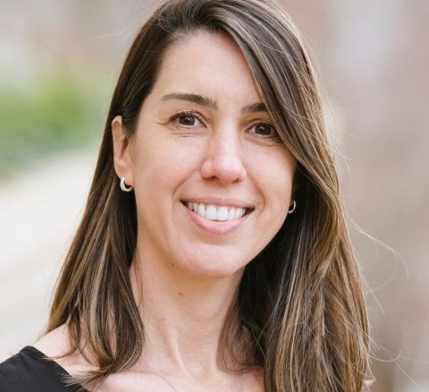
Marina Weiler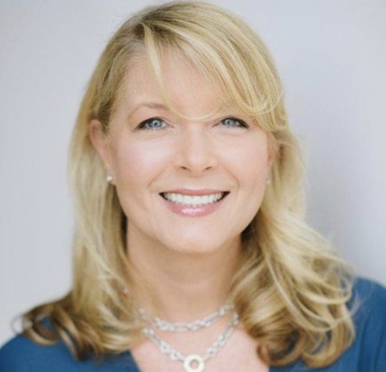
Kim Penberthy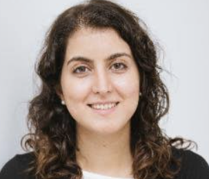
Saeedeh Sadeghi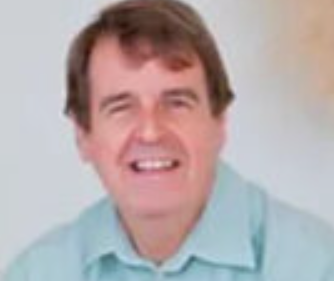
Martin FlemingAt the borderlands of consciousness, near-death experiences (NDEs), out-of-body experiences (OBEs), and reports of past-life memories raise pointed questions about whether consciousness depends entirely on the brain. This workshop reviews the scientific study of these phenomena — from prospective hospital NDE research and tests of perception during OBEs to systematically investigated cases of children who report past-life memories — and what they may imply for theories of mind.
Part 1 (8:30 – 10:40 am) — presenters:
Marina Weiler (UVA/DOPS) — Veridical out-of-body experiences.
Kim Penberthy (UVA/DOPS) — Title TBD.
Saeedeh Sadeghi (UVA/DOPS) — Past-Life Memories in Children: Common Patterns Across Many Cases.
Part 2 (11:10 am – 12:30 pm) — presenters:
Martin Fleming (SPi, BIHS) — Quantitative Experimentation with Remote Perception.
Kunal Mooley (IMICS, IITK, Caltech; Chair) — Exploring the Mind Body problem through Neurobiological Studies of children claiming past life memories.
W5: The Varieties of Non-Human Consciousness
 Susan Schneider (Chair)
Susan Schneider (Chair) Anirban Bandyopadhyay
Anirban Bandyopadhyay Mike Wiest
Mike WiestCould consciousness extend beyond the human brain — to animals, plants, cultured neurons, or artificial systems? This workshop probes the criteria and evidence for consciousness in non-human systems, from brain organoids and microtubule-based models to machine intelligence, and asks how we might recognize or measure minds unlike our own.
The session runs as a series of fast 15-minute presentations, with each speaker offering a concise, focused talk followed by brief discussion. Full program to be posted soon.
W6: Consciousness and Psychedelics
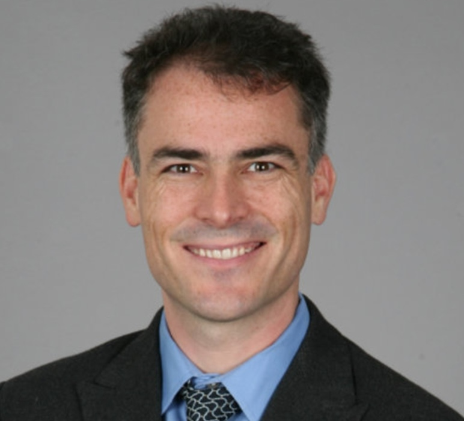
Rael Cahn(Chair)
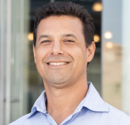
Joe Tafur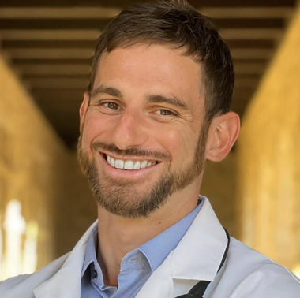
Kieran FoxThe deepest forms of healing have long been understood as inseparable from spiritual transformation — a reorientation of the self toward connection, wholeness, and unity beyond ordinary egoic experience. This workshop brings together three physician-scientists to examine spiritual healing as both lived reality and emerging science. Rael Cahn (USC) presents two decades of EEG, ERP, and neuroimaging research comparing meditative and psychedelic states and current work on mindfulness-assisted psilocybin therapy grounded in non-dual awareness. Joe Tafur (Modern Spirit) explores the role of spiritual healing in psychedelic-assisted therapies, drawing on his new book Medicine Song: Spiritual Healing and the Psychedelic Renaissance, his work with psychedelic therapies, and his training in South American curanderismo. Kieran Fox (UCSF) situates these findings within contemplative and psychedelic neuroscience and the lineage of scientific seekers, Einstein among them, who found in oneness the deepest motivation for inquiry. Together they ask how a science of consciousness might take spiritual healing seriously without reducing it.
Part 1 (8:30 – 10:40 am) — presenters:
B. Rael Cahn, MD, PhD — The Dissolving Self: Neurophysiology of Meditative and Psychedelic States and Their Healing Potential.Cahn is Clinical Associate Professor of Psychiatry at the Keck School of Medicine of USC and Director of the USC Center for Mindfulness Science, where he leads the Meditation and Psychedelic Therapy Lab. Drawing on more than twenty years of EEG, ERP, and neuroimaging research, he compares how long-term meditation and psilocybin reshape sensory and cognitive processing, narrative self-referencing, and the felt sense of selfhood. He examines where contemplative and psychedelic states converge and diverge at the neural level, and how self-dissolution and non-dual awareness may serve as active ingredients in psychological healing — drawing on current work in mindfulness-assisted psilocybin therapy for depression to consider how rigorous neuroscience can illuminate, rather than explain away, the therapeutic power of self-transcendence.
Joe Tafur, MD — Medicine Song: Spiritual Healing and the Psychedelic Renaissance.Tafur is a Colombian-American integrative physician, curandero, and author who trained for years in Traditional Amazonian Plant Medicine and South American curanderismo at Nihue Rao Centro Espiritual in Peru, and co-founded the nonprofit Modern Spirit and the Church of the Eagle and the Condor. Drawing on his most recent book, he explores spiritual healing as the heart of both Indigenous plant medicine and the contemporary psychedelic renaissance. Taking the prophecy of the Eagle and the Condor — the re-harmonizing of science and spirit, mind and heart — as a guiding frame, he examines the role of spiritual healing in modern medicine, arguing that sacred plants and psychedelic medicines, offered responsibly, can catalyze profound emotional healing through spiritual awakening — associated improvement in emotional and spiritual well-being are increasingly legible through modern advances in psychoneuroimmunology, epigenetics, and consciousness research.
Part 2 (11:10 am – 12:30 pm) — presentation and closing panel:
Kieran C. R. Fox, MD, PhD — Cosmic Religion: Oneness, Self-Transcendence, and the Scientific Pursuit of the Sacred.Fox is a physician-scientist at UCSF whose research centers on the neural mechanisms and therapeutic potential of meditation and psychedelics; he holds a doctorate in cognitive neuroscience from UBC and is the author of I Am a Part of Infinity: The Spiritual Journey of Albert Einstein. He situates contemplative and psychedelic experience within the history of science itself — the lineage of seekers, Einstein foremost among them, for whom a “cosmic religious sense” of unity and interconnectedness was not opposed to rigorous inquiry but its deepest source. Connecting the neuroscience of self-transcendence and the dissolution of ordinary self-other boundaries to enduring philosophical and spiritual frameworks of oneness, he argues that taking the experience of the sacred seriously may be essential both to a complete science of consciousness and to understanding why such experiences so reliably heal.
Closing panel — Taking Spiritual Healing Seriously: Toward a Non-Reductive Science of Consciousness.All three presenters join a moderated discussion on how a science of consciousness might engage spiritual healing on its own terms — honoring the relational, cultural, and ethical contexts of contemplative and Indigenous practices while subjecting their mechanisms and outcomes to rigorous study. Audience Q&A.
W7: The MindSwan Prize: The Search for Extraocular Perception
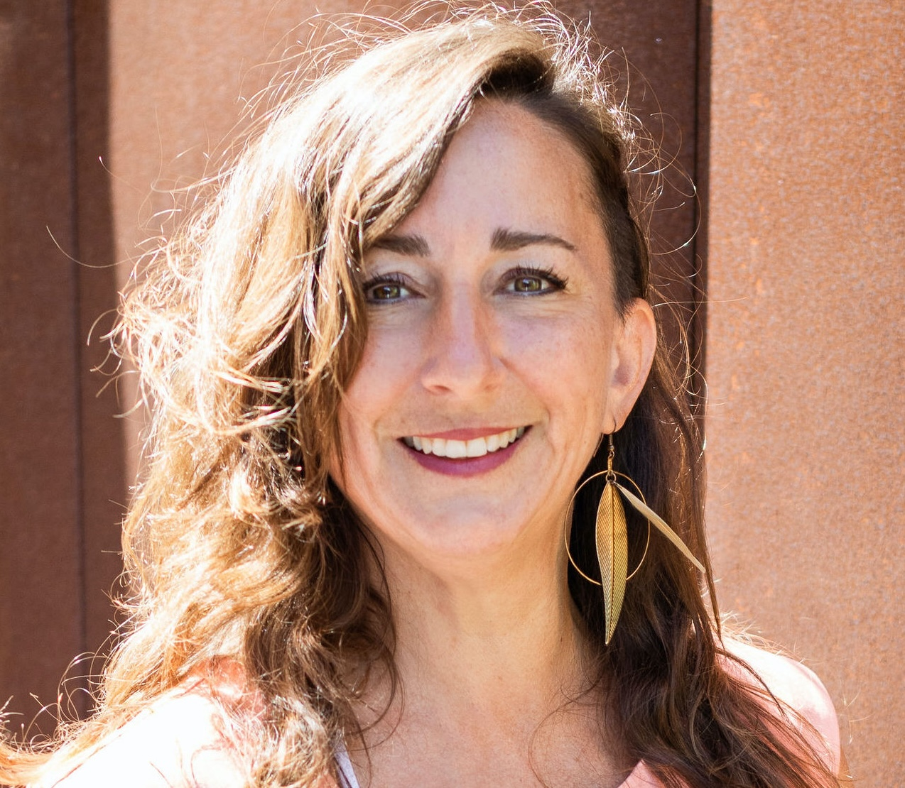
Stacey Murphy (Chair)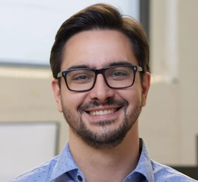
David ChartrandExtraocular perception — the claimed ability to perceive without the eyes — is a striking and contested frontier in consciousness research. The MindSwan Prize is an international scientific challenge that investigates such claims through rigorous, replicable methods. The workshop unfolds in three parts:
Marina Weiler (neuroscientist, Division of Perceptual Studies, University of Virginia) opens by reviewing what extraocular perception is, the existing scientific literature, and videos of current claims — then introduces the MindSwan research protocol, the challenges it raises, and how they can be met with scientific rigour. David Chartrand (Executive Director, CUSAC) explains the vision behind the MindSwan Prize and how open scientific challenges can advance consciousness research through collaboration and public participation. The session closes with a live protocol demonstration and open discussion (invited: Martin Monti), considering what successful results would actually represent and how future studies could distinguish between competing explanations.
W8: MAHP — Mindful Awareness Healing Practice
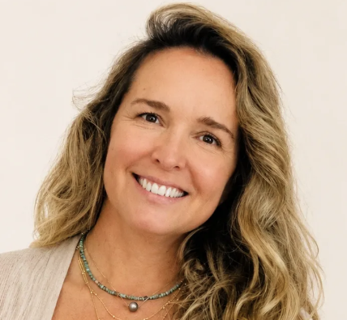
Kai SilvaAn interdisciplinary contemplative workshop created by Dr. Kelli (Kai) Silva (Ph.D. Philosophy/Metaphysics). Mindful Awareness Healing Practice (MAHP) is an integrative experiential approach designed to cultivate awareness through mindful movement, breath regulation, meditation, and heart-centered practices. This workshop explores the relationship between body awareness, emotional regulation, and expanded states of consciousness by inviting participants to move from cognitive processing into direct embodied experience.
Through gentle movement, intentional breathing, guided meditation, and reflective awareness practices, participants will explore the connection between the body, mind, and heart as pathways for deeper self-awareness. Inspired by contemplative traditions and supported by emerging research on mindfulness, compassion, and mind-body practices, MAHP emphasizes qualities such as presence, gratitude, compassion, and connection. Participants will be guided through a progressive experience including grounding techniques, mindful movement, breath awareness, heart-focused meditation, and integration practices. The session is accessible to all levels and does not require previous yoga or meditation experience.
MAHP was developed as part of my doctoral exploration of Heart-Centered Awareness and has been shared in community and wellness settings, including an 8-week pilot experience with the UCSD Stein Institute for Research on Aging team, where participants reported improvements in calmness, emotional balance, focus, and overall well-being. This experiential workshop invites participants to explore consciousness not only as a concept to be studied, but as a lived experience accessed through awareness, embodiment, and the intelligence of the heart.
Sessions also held Monday through Friday, before the official program. kaisilva.com